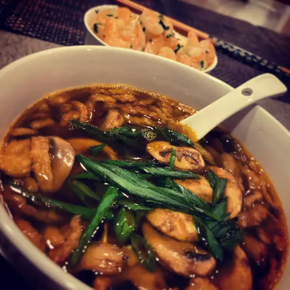

Miso Soup

Description
Made with kombu, bonito flakes, and miso paste, Japanese miso soup is a simple and comforting.
Ingredients
- 4 cups water
- 1 (4 inch) piece dashin kombu (dried kelp)
- ½ cup bonito flakes
- ½ (12 ounce)package tofu, cut into chunks
- 1 teaspoon dried wakame
- 3 tablespoons miso paste
- ¼ cup chopped green onions